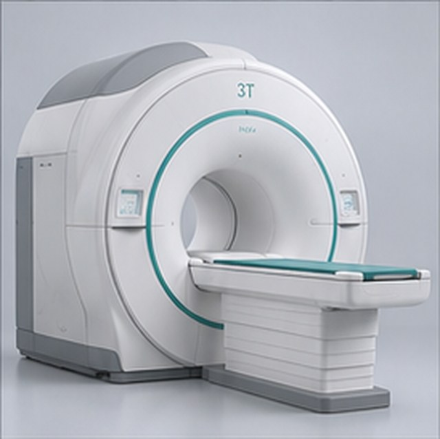
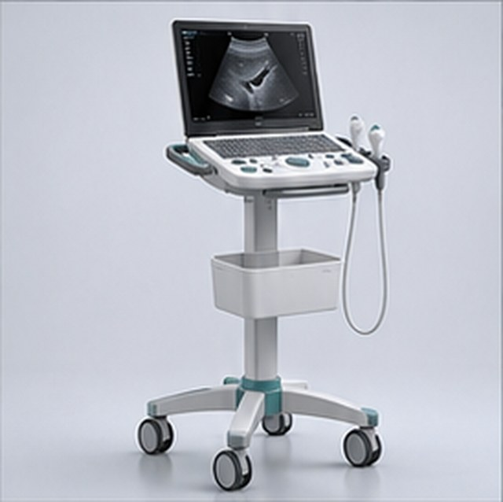
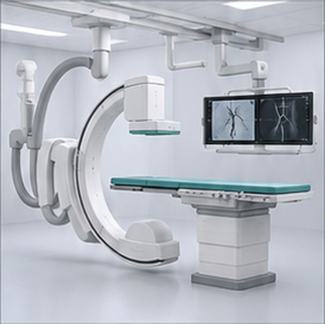
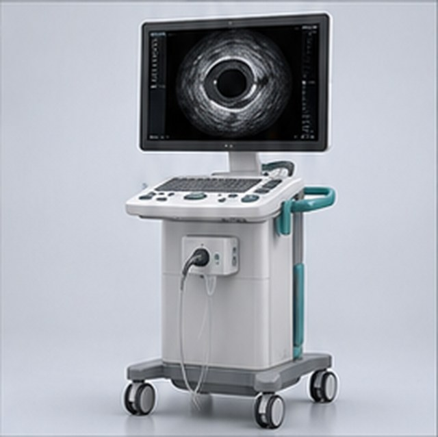
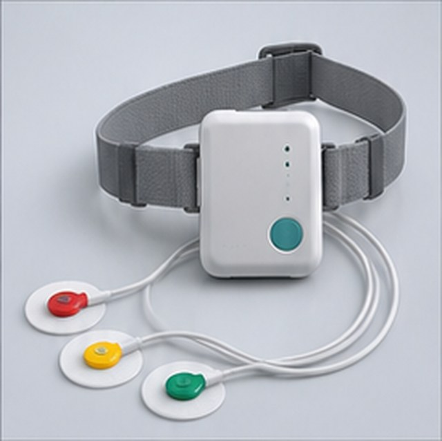
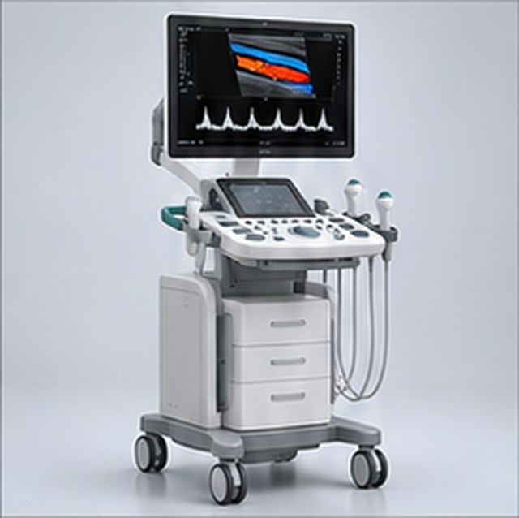
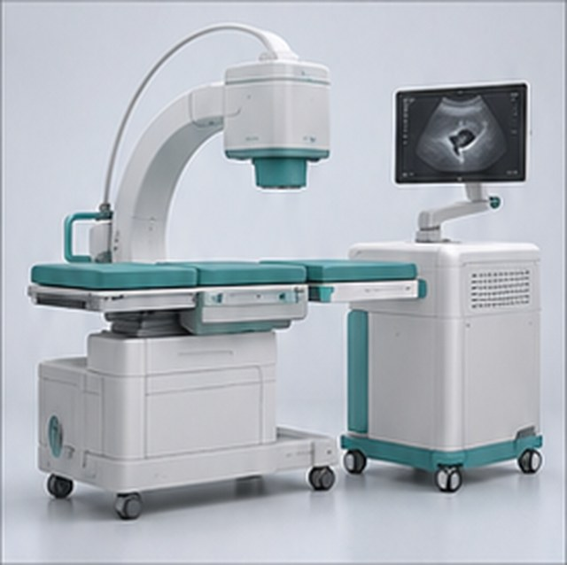
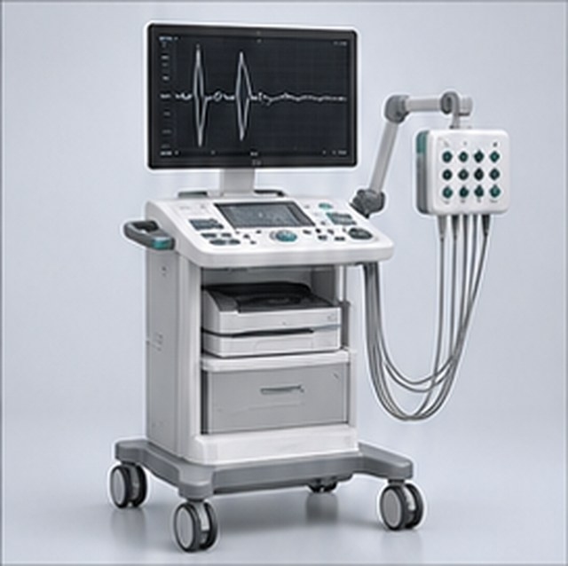
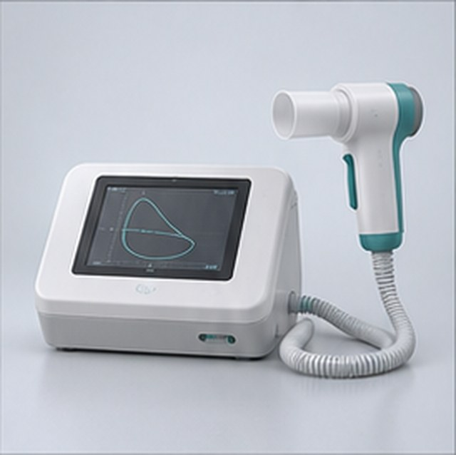

검사 목적별 진단 장비와 검사항목을 확인하세요.
진단 장비 · 검사 목적별 진단 장비와 검사항목을 확인하세요.

자기장을 이용해 신체 내부를 단면 영상으로 살피는 장비입니다.
영상 기술과 자동화 기능으로 여러 진료 분야의 검사를 지원합니다.

자기장을 이용한 단면 촬영으로 신체 내부의 상태를 살핍니다.
고압 환경에서 산소 흡입을 돕는 치료용 기기입니다.

혈관 상태를 영상으로 확인하고 필요한 시술을 돕습니다.

혈관 내부를 촬영해 관상동맥 상태를 확인합니다.

일상 활동 중 심장 박동을 기록해 부정맥 평가에 사용합니다.
자기적 성질을 이용해 인체 내부 영상을 얻습니다.
X선을 이용해 신체 단면 영상을 촬영합니다.

컬러 도플러 영상으로 혈류를 살펴보는 데 사용합니다.

충격 에너지를 모아 요로 결석을 잘게 부수는 데 사용합니다.
치아와 턱을 넓은 범위로 촬영합니다.
방사선 측정값으로 뼈의 무기질 밀도를 확인합니다.
초음파 도플러 방식으로 뇌혈관의 혈류를 측정합니다.
피부에 붙인 전극으로 뇌의 전기적 활동을 측정합니다.

신경과 근육의 전기 반응을 측정합니다.
체지방과 근육량 등 신체 구성 지표를 측정합니다.

호흡량과 폐의 환기 기능을 측정합니다.
특정 파장의 빛으로 점막 표면과 혈관을 관찰합니다.
시술과 수술 중 목표 부위를 영상으로 확인합니다.
유방 조직 검체를 채취하는 데 사용하는 장비입니다.
SEOHAE DIAGNOSTIC EQUIPMENT